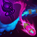

Q
HANDSHAKE
Renata vystřelí raketu, která znehybní prvního zasaženého nepřítele. Poté může schopnost seslat znovu a mrštit jednotku zvoleným směrem.

W
BAILOUT
Renata posílí spojeneckého šampiona, aby bojoval usilovněji, oddálí tak jeho smrt a umožní mu se zachránit, pokud si připíše likvidaci.

E
LOYALTY PROGRAM
Renata vystřelí dvojici chemotechnických raket, které poskytnou spojencům štít a zasažené nepřátele poškodí a zpomalí.

R
HOSTILE TAKEOVER
Renata vyšle zvoleným směrem vlnu chemikálií a všichni zasažení nepřátelé propadnou běsnění.